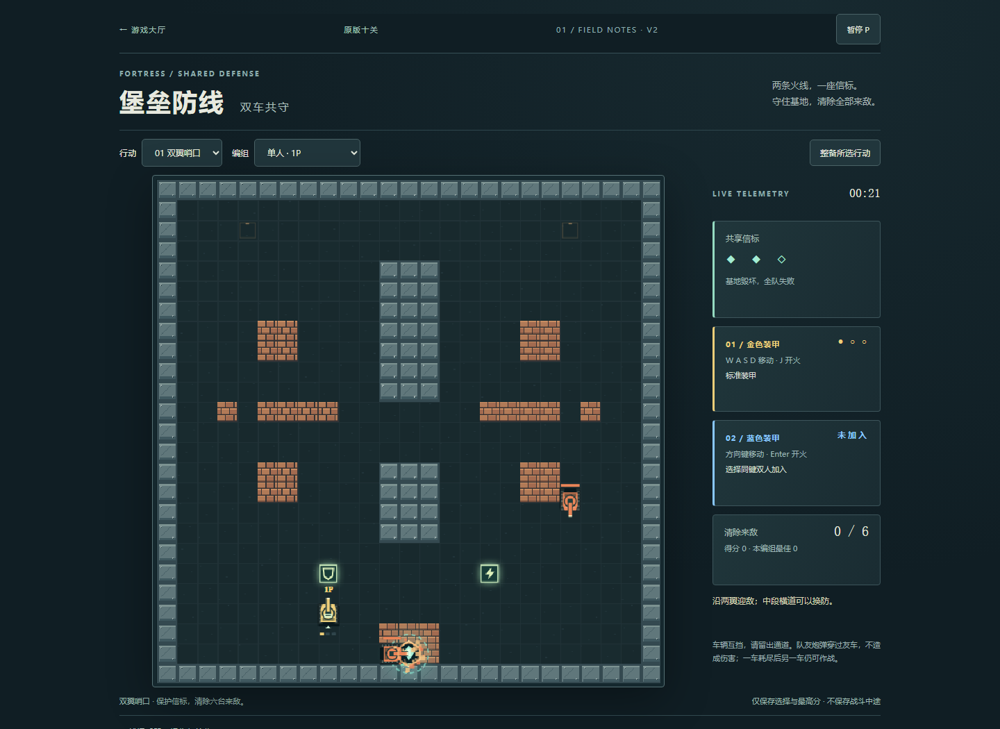
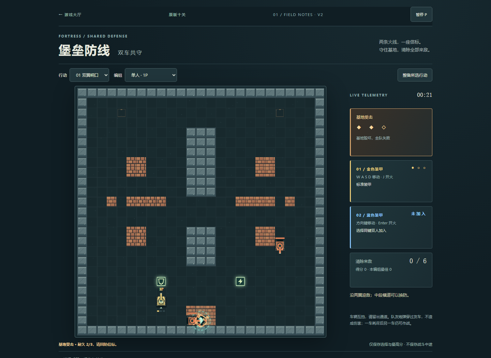
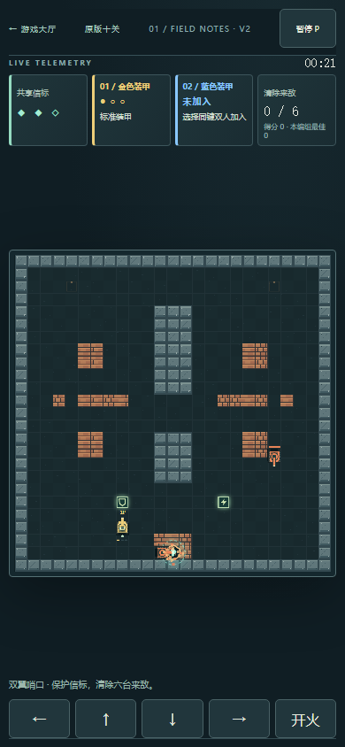
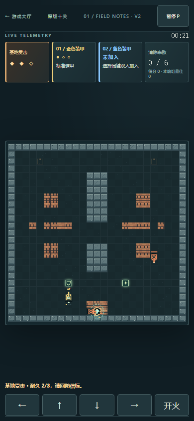

只做一项反馈改进：基地卡片明确标“基地受击”，暖色强调；现有状态行显示剩余耐久与回防建议。伤害、速度、地图、敌人和存档格式均未改变。
基线9c8b107。截图为同尺寸原生浏览器视口，未裁剪或改绘；不是玩家研究。390CSS非真机，未验真人反应、全双人体验、声音或审美。线上同组与版本匹配在发布后核验，交付消息记录。
完整观察、实现与边界 · 修前记录 · 本地修后 · 测试结果 · 测试源码 · 浏览器脚本



